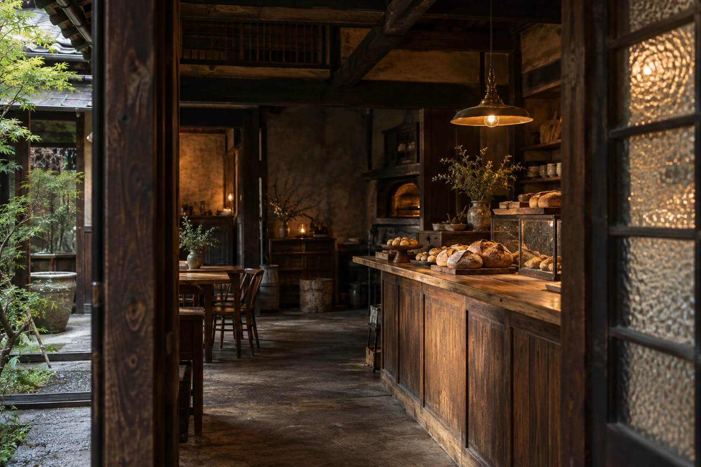
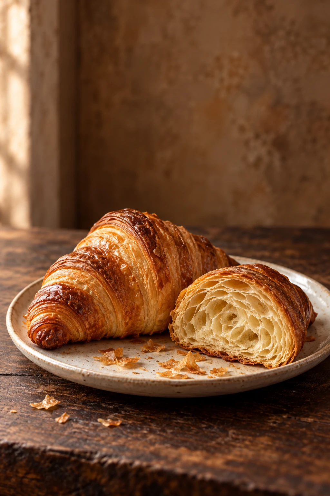
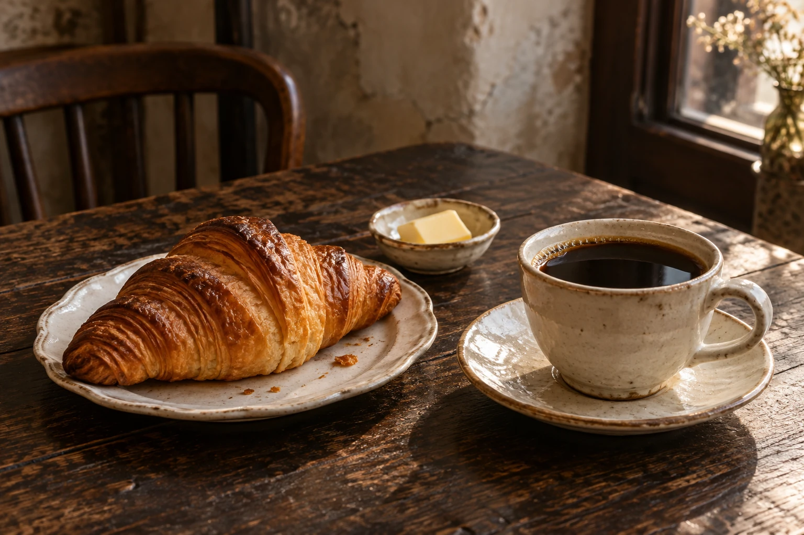
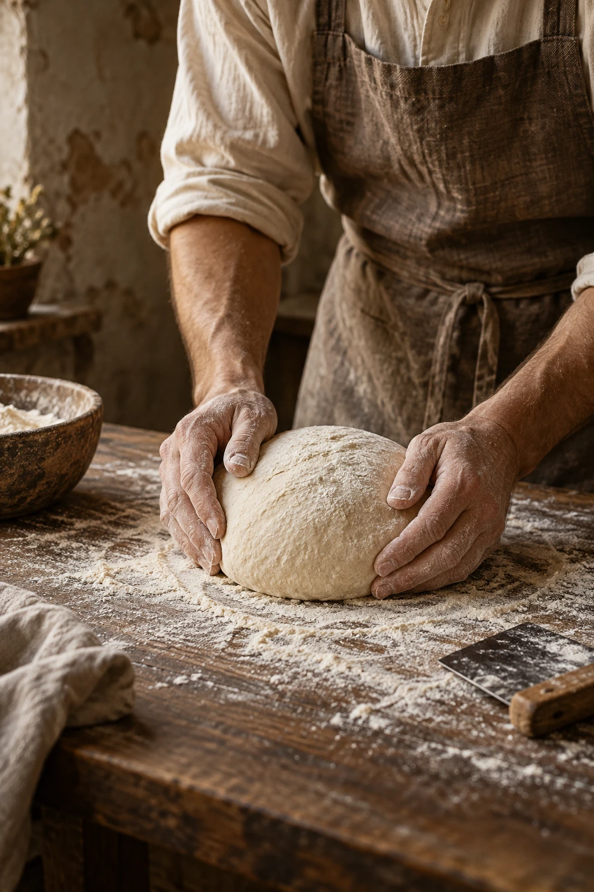

噛むほどに。
日々のカンパーニュ
Country loaf



パンと、ほどける時間。
扉をひらくと、
焼きたての香り。
パンをちぎる。
珈琲をひと口。
時計を、少し忘れる。
何でもない朝が、
好きになる場所。
Bread, slowly made.
粉と水を合わせて、発酵を待つ。
生地がふくらむ速さに、朝の仕事を合わせます。
皮は香ばしく、中はしっとり。
噛むほどに、小麦の甘みが広がるパン。
スープに添える日も、バターだけの日も。
いつもの食卓に、よくなじむひとつを。

From our oven.
生地に触れ、焼き色を確かめる。
気温や湿度の違いを見ながら、
毎朝、手を動かします。
mellow ovenは、小さなベーカリーカフェ。
一度に焼ける数は少しずつ。
その日のパンを、棚に並べてお待ちしています。
Three little pleasures.
皮をかじる音。
バターの余韻。
ちぎったときの、やわらかさ。
Country loaf
Butter croissant
Morning loaf
mellow ovenの架空のパンを表現した生成イメージです。
A cup, a quiet moment.
香ばしいパンには、少し深煎りの珈琲を。
バターの甘い余韻を、ほろ苦さで引き立てて。
カウンターで、本を一冊。
窓辺の席で、いつもの話を。
カップが空になるまで、
どうぞ、気兼ねなく。
A day at mellow oven.
好きな時間に、好きな過ごし方で。
朝の香り
扉が開くころ、クロワッサンと山食パンが焼き上がります。厚切りのトーストに珈琲を添えて、いつもより少しゆっくりと。
焼きたてのころ
香ばしいカンパーニュが並ぶ時間。夜のスープに合わせても、明日の朝の楽しみにしても。13時ごろには、クロワッサンをもう一度焼きます。
午後の余白
窓辺の影が長くなるころ。読みかけの本を開いても、何もしなくても。冷めてゆく珈琲の味わいとともに、午後をお過ごしください。
架空店舗の一日を描いたものです。焼き上がり時刻は目安の設定です。
Stay a little longer.
長い時間を重ねた木に、
新しい朝の光が差す。
椅子を引く音も、カップを置く音も、
この場所の一部になる。
パンを食べた日の景色が、少し残るように。
We look forward to seeing you.
パンを買いに。珈琲を飲みに。
どうぞ、お気軽にお立ち寄りください。
メロウオーブン / ベーカリーと喫茶
架空店舗の自主制作サイトです。
実在の住所・営業情報・来店先はありません。
はい。お持ち帰りだけでも、お気軽に。店内のお席は、喫茶をご利用の方へご案内します。
お席は、ご来店順にご案内します。少人数でゆっくりと過ごしていただける、小さなお店です。
このサイトのパンは架空の商品です。原材料・アレルギー情報は設定していません。実際の商品を選ぶ際は、販売店舗の表示をご確認ください。